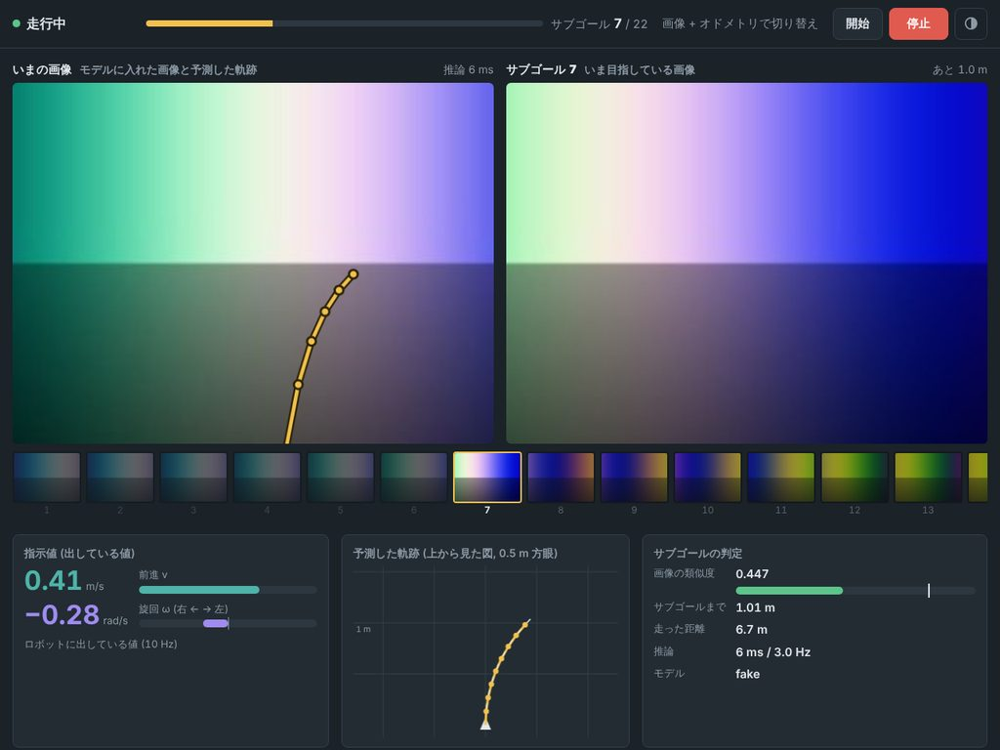

学習 PC でコース走行の rosbag から OmniVLA を学習し、Jetson ではサブゴール画像を切り替えながら走る。 Jetson の中は 推論コンテナ と ROS 1 コンテナ の 2 つに分かれている。
実行手順は README にあります。
③ で最後のサブゴールに着いたら停止。① 〜 ⑧ は新しいカメラ画像が来るたびに繰り返す (上限はカメラの周期と推論時間)。過去画像は学習データと同じ 3Hz ごとに積む。⑧ の指示値は 10Hz で出し続ける。
| JetPack | Ubuntu | 推論コンテナのベース (JETSON_BASE_IMAGE) |
|---|---|---|
| 6.1 / 6.2 | 22.04 | dustynv/l4t-pytorch:r36.4.0 (既定) |
| 6.0 | 22.04 | dustynv/l4t-pytorch:r36.2.0 |
| 5.1.2 | 20.04 | dustynv/l4t-pytorch:2.2-r35.4.1 |
ROS 1 コンテナは JetPack に関係なく ros:noetic-ros-base (arm64 / x86 両対応)。
やりとりは「画像を渡して、その結果を待つ」だけなので、リクエスト / レスポンス型で、追加のライブラリが要らないものを選んだ。
| 方式 | 形 | 追加で必要なもの | 判断 |
|---|---|---|---|
| HTTP | リクエスト / レスポンス | なし (Python は標準ライブラリ、C++ は同梱のヘッダ) | 採用。curl :8765/info で生存確認できる |
| ZeroMQ | リクエスト / レスポンス | 両コンテナに pyzmq | 同じくらい妥当。少し軽い |
| MQTT | 配信 / 購読 | ブローカー (mosquitto など) | 結果を待つ使い方に合わない。プロセスが 1 つ増える |
| gRPC | リクエスト / レスポンス | grpcio · protobuf | 7B の依存 (protobuf<5) とぶつかりやすい |
omnivla_real/remote.py (推論コンテナ) と policy_client.cpp (ROS 1 コンテナ) だけに閉じているので、他の方式に替えても残りは変わらない。ROS 1 コンテナ (C++ のノード) が小さな Web サーバを持っていて、ロボットと同じネットワークのブラウザから http://<Jetson の IP>:8080 で開ける。

| 表示 | 中身 |
|---|---|
| いまの画像 | モデルに入れた画像 (切り抜き・縮小の後) に、予測した 8 点の軌跡を重ねたもの |
| サブゴール | いま目指している画像と、そこまでの距離。下にコースのサブゴールが並ぶ |
| 指示値 | ロボットに出している v と ω、直近 60 秒の履歴 |
| 予測した軌跡 | 上から見た図 (0.5 m 方眼) |
| サブゴールの判定 | 画像の類似度と切り替えのしきい値、推論時間と回数 |
robot.yaml の camera (画角・高さ・下向きの傾き) で計算する。実機に合わせると重なりが正しくなる。| 部分 | Docker | compose | 主なコード |
|---|---|---|---|
| 推論コンテナ (Jetson) | docker/Dockerfile.jetson | policy | tools/policy_server.py · omnivla_real/remote.py · edge.py · policy.py |
| ROS 1 コンテナ | docker/Dockerfile.ros1 | nav (Jetson · replay) · ros1 (PC) | ros1/omnivla_real_ros1: src/navigator_node.cpp · src/core/ (走行の中身) · web/index.html (デバッグ画面) |
| 学習 PC | docker/Dockerfile | shell · train_7b · train_edge · policy | tools/ (変換・topomap・机上評価) · training/ |
| 学習 PC で実機と同じ構成 | 上の 2 つ | docker-compose.replay.yml: roscore · policy · nav (Jetson の定義そのまま) · robot · record | scripts/bag_robot.sh (bag をロボットの代わりに流す) |
| コマンド | bin/: setup.sh · bag_info.sh · check_odometry.sh · make_dataset.sh · train.sh · make_topomap.sh · desk_eval.sh · replay.sh · plot_nav_log.sh · to_jetson.sh · jetson.sh (中で docker compose を呼ぶ. -h で使い方) | ||
| 設定 | configs/robot.yaml (トピック名・画像の前処理) · configs/navigator.yaml (モデル・制御・サブゴール) · .env (JetPack・重み・ROS master) | ||